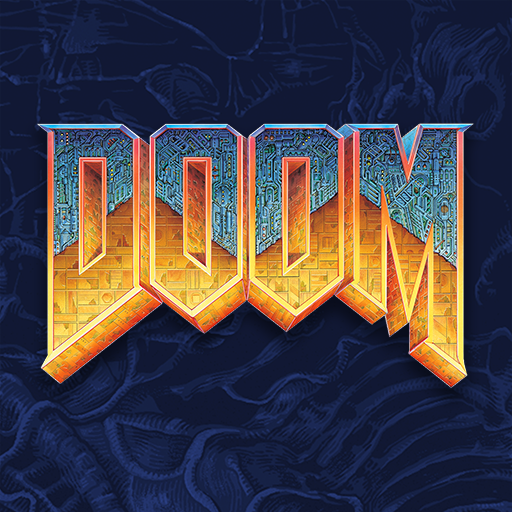
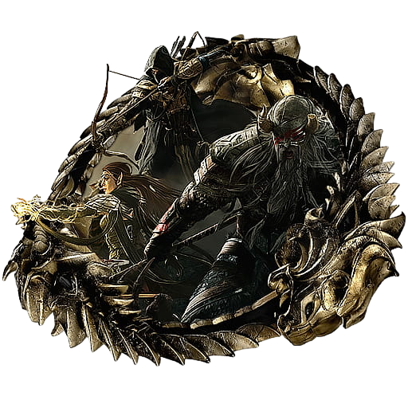

Franquicias Destacables
A continuación se muestran algunas de las franquicias actuales que forman parte de Bethesda,
ya sean desarrolladas o distribuidas por la empresa.

DOOM
El videojuego Doom de 1993 es considerado uno de los videojuegos pioneros de disparos en primera persona al presentar,
en la época de las computadoras compatibles con IBM, características novedosas como gráficos 3D, espacialidad de tercera dimensión,
juego en red multijugador y soporte para modificaciones creadas por el jugador con el formato Doom WAD.
 Fallout
Fallout
Fallout es una serie de videojuegos de rol publicados originalmente por Interplay, posteriormente por Bethesda Softworks y actualmente por Xbox Game Studios.
Aunque las tramas de los videojuegos se desarrollan en los siglos xxii y xxiii, prevalece una gran influencia de la cultura de posguerra desarrollada en los años 1950
en Estados Unidos, así como la combinación de esperanza y progreso tecnológico.

The Elder Scrolls
The Elder Scrolls es una serie de videojuegos de rol característica por su gran libertad en el planteamiento y gran extensión territorial.
En esta serie el jugador participa en una historia épica en el continente de Tamriel tomando parte fundamental en los acontecimientos,
normalmente de carácter apocalíptico, de cada era.
Nuestras paginas